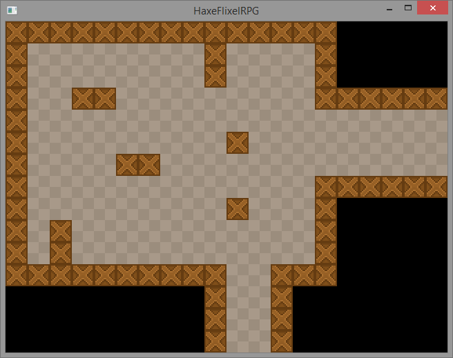

In this part we'll add a tile map to our game.
The HaxeFlixel community has created a flixel-addons repository with a lot of useful classes, including custom tilemap format parsers from generic tilemap creation software, such as Tiled or Ogmo.
In this tutorial, however, we'll take a look at the built-in HaxeFlixel class FlxTilemap, which lets us load an image and a CSV (comma separated value) file to generate a map.
This approach is very flexible and will work with any editor that exports CSV files.
You can, of course, not use any editor and just write the map values by hand. Or you could make your engine generate a dungeon for you. The important thing is to have a CSV string as a result.
To save you from hassle, I have created a simple 50x50 tilemap. First of all, here's the tileset:
As you can see, it consists of just 2 tile types. The crate tile will act as a wall, and the second tile will be the ground.
Here's my CSV file which represents the level layout.
Once you've got these assets (or created your own), they should be put in the project directory to be accessible to your game.
Put the CSV file to assets/data/map.csv and the tileset image to assets/images/tileset.png.
When that's done, you're ready to render it in your game.
Go to the PlayState class and introduce 3 new variables: an instance of the FlxTilemap class, and 2 integers representing the width and height of a single tile (16 in this case).
private var tileMap:FlxTilemap;
static var TILE_WIDTH:Int = 16;
static var TILE_HEIGHT:Int = 16;
To actually generate and display the map, you first need to call the loadMap() method of the FlxTilemap instance.
The method has several parameters. The first parameter receives the level data in CSV format, either a String or an Array of Int. In our case we will load the CSV file from assets.
The second parameter sets the tileset image. The next two define the width and height of a tile.
The next parameter is an optional Int value which determines whether or not to use the AutoTiling algorithm to automatically choose one of the provided 16 tiles depending on the connection of this tile to the neighboring tiles. This way you can, for example, create different tile graphics for corners of walls and such.
Since we only have 2 tiles, we won't use the AutoTile feature this time.
The next parameter determines which index does the tile numeration start at. It's 0 by default, but in my case the "void" in my CSV file is represented by 0 and the tiles are represented by the numbers 1 and 2. Because of this, I'll set this parameter to 1.
Those are all the parameters we're going to use this time. The code to load and display the map looks like this:
tileMap = new FlxTilemap();
tileMap.loadMap(Assets.getText("assets/data/map.csv"), "assets/images/tileset.png", TILE_WIDTH, TILE_HEIGHT, 0, 1);
add(tileMap);
The PlayState.hx class itself looks like this:
package ;
import flixel.FlxG;
import flixel.FlxSprite;
import flixel.FlxState;
import flixel.text.FlxText;
import flixel.tile.FlxTilemap;
import flixel.ui.FlxButton;
import flixel.util.FlxMath;
import openfl.Assets;
/**
* A FlxState which can be used for the actual gameplay.
*/
class PlayState extends FlxState
{
private var tileMap:FlxTilemap;
static var TILE_WIDTH:Int = 16;
static var TILE_HEIGHT:Int = 16;
/**
* Function that is called up when to state is created to set it up.
*/
override public function create():Void
{
super.create();
tileMap = new FlxTilemap();
tileMap.loadMap(Assets.getText("assets/data/map.csv"), "assets/images/tileset.png", TILE_WIDTH, TILE_HEIGHT, 0, 1);
add(tileMap);
}
/**
* Function that is called when this state is destroyed - you might want to
* consider setting all objects this state uses to null to help garbage collection.
*/
override public function destroy():Void
{
super.destroy();
}
/**
* Function that is called once every frame.
*/
override public function update():Void
{
super.update();
}
}If you test the game now, you'll see that the map is loaded and displayed as soon as you press the "New game" button.
